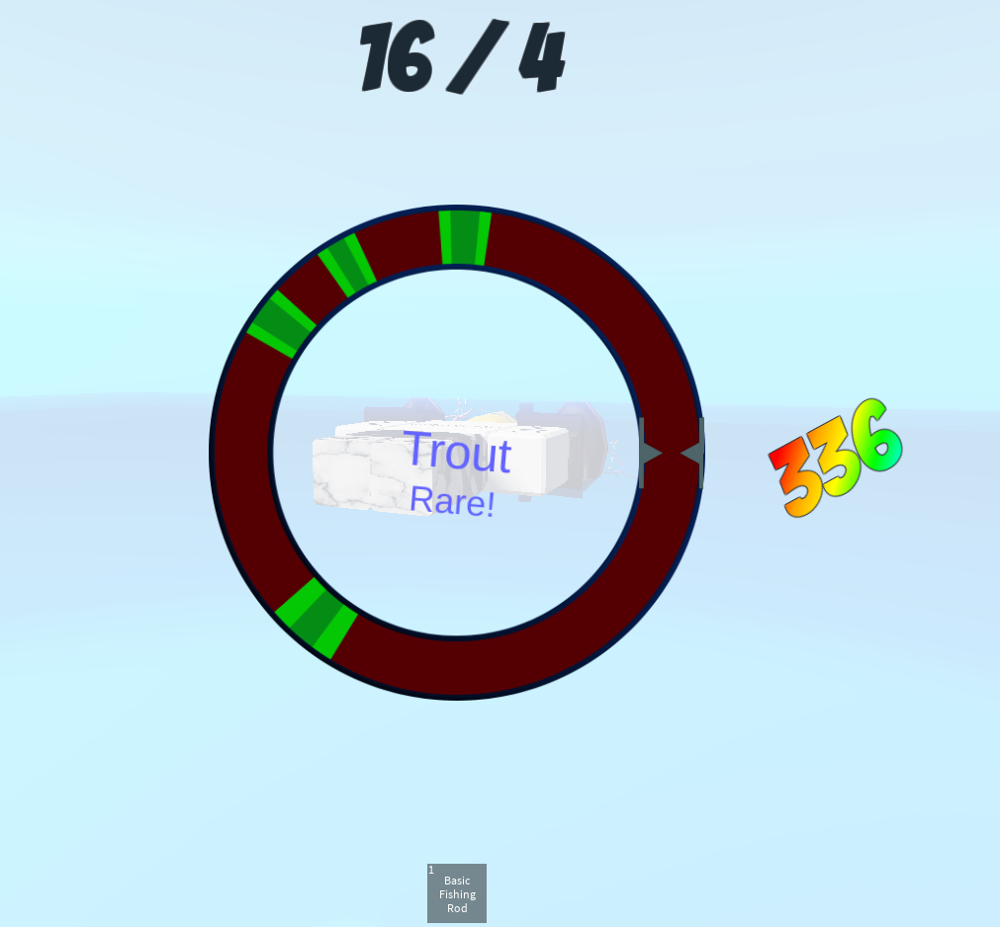
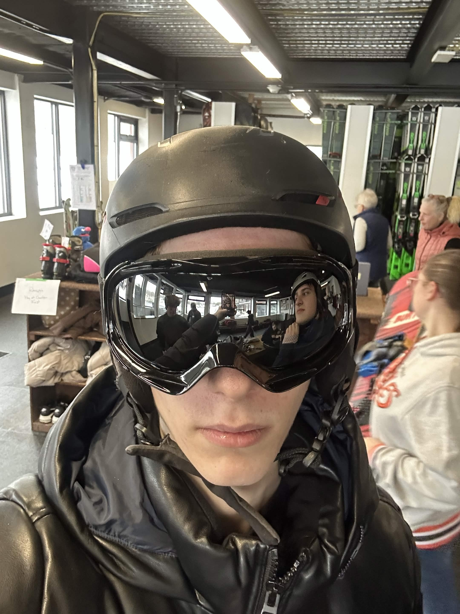
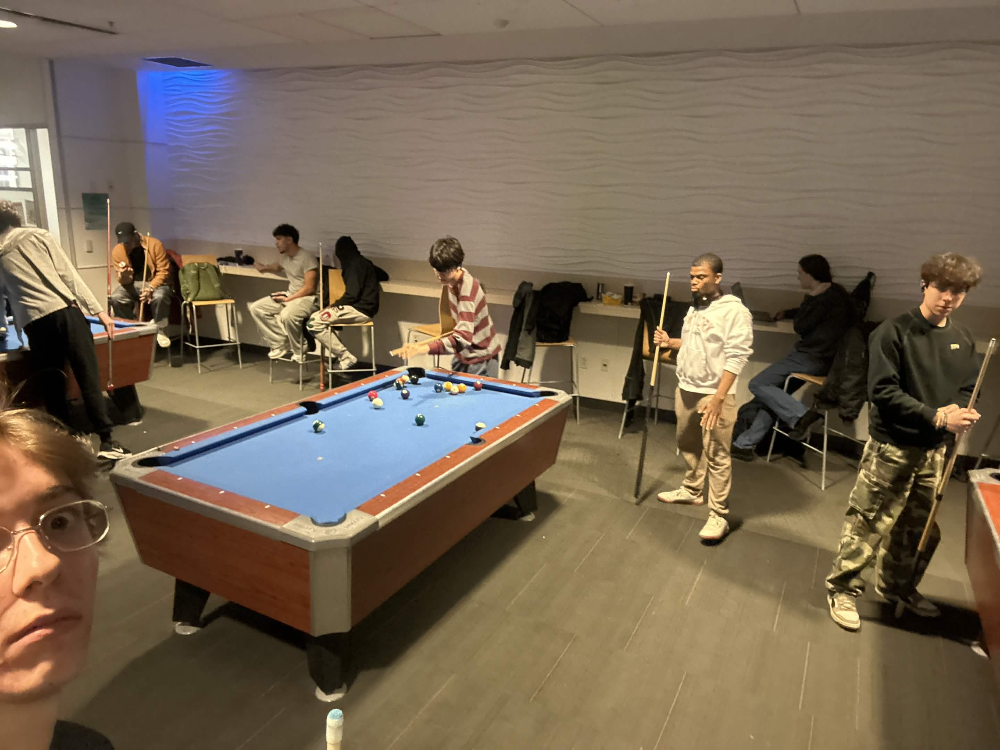
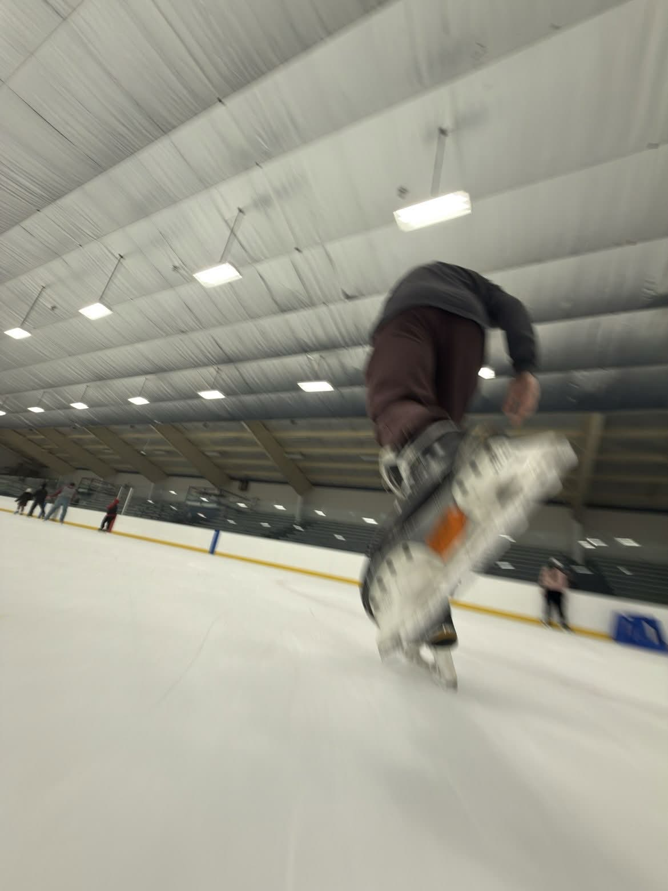
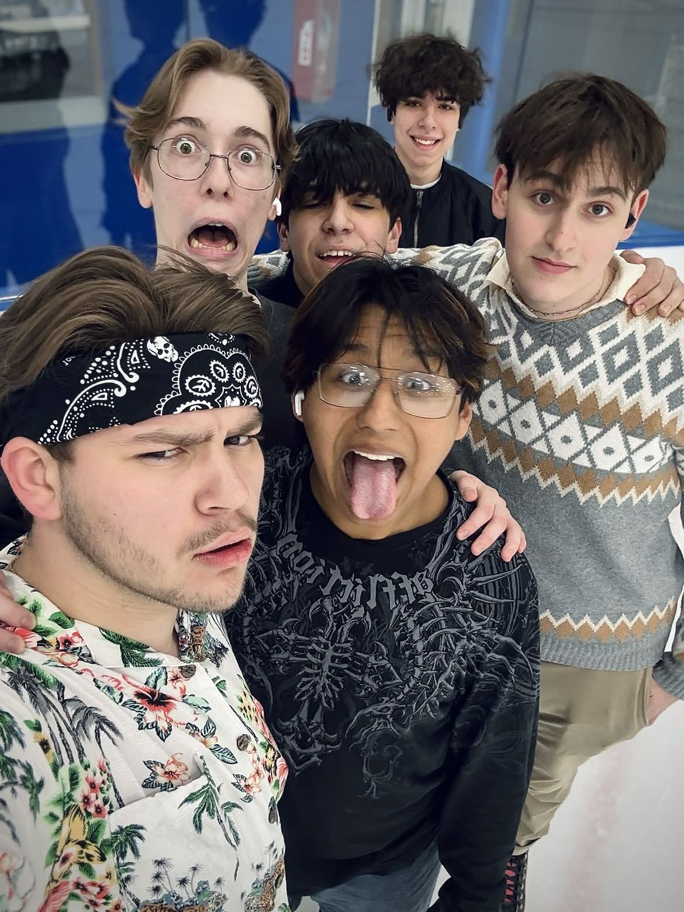
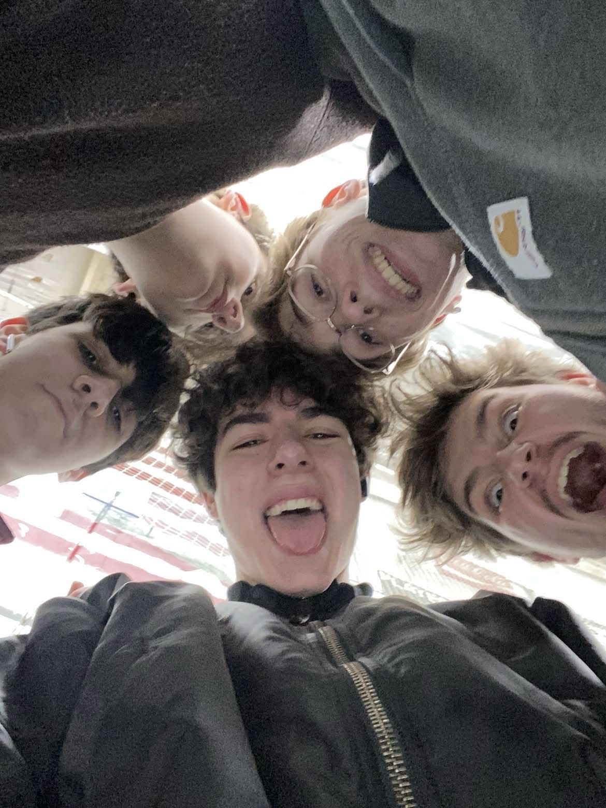
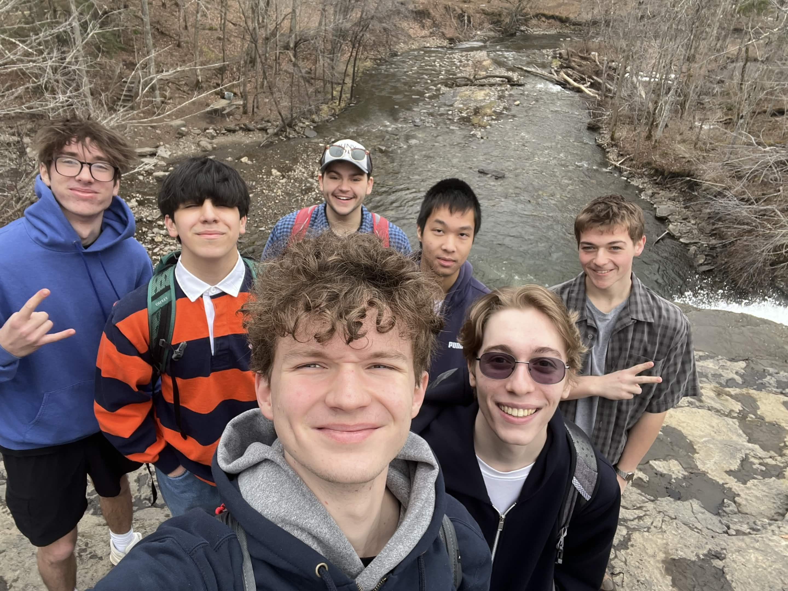
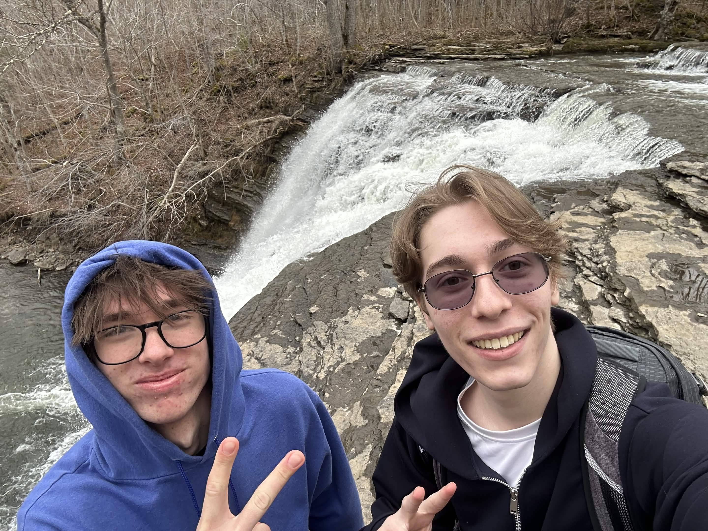
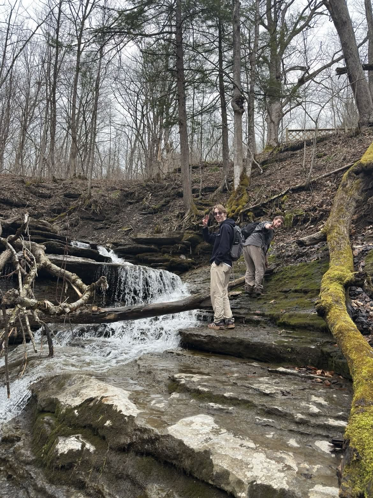

Marvel O.
CS Student @ SUNY Poly
Backend Systems • Game Design
↓ Scroll to start
About me
Programming has interested me since I first started learning JavaScript using Atom in elementary school. Since then I have gained tons of knowlege, and I am always looking for new ways to learn new things or apply My current knowlege.
Throughout my years of coding, I have learnt how to do things from making backend tests to managing large databases to creating games. I have always enjoyed challenging myself to create new things by setting a bar above my current skills and learning enough to surpass it.
Technical Skills
Projects
Engineering Highlights
↓
Roblox UI Framework

Hover to pause • Click to expand
Biggest Accomplishment: Roblox's default UI engine was too heavy for my needs, so I architected a custom sprite-based rendering system. This optimized performance and allowed for pixel-perfect scaling.
Current Status: While the UI and Inventory replication backend are complete, the project is currently paused as I research custom client-side prediction methods to solve network latency issues in the movement system.
Experience
Professional & Academic
Backend Assurance
itsgot.com- Role: 3 Years | Backend Test Creator
- Skills used: Ruby, Capybara, Git.
- My contribution: Maintained platform stability by writing automated tests.
- The Workflow: Collaborated in a professional environment using Git standards, managing branches, resolving merge conflicts, and conducting code reviews to ensure clean production code.
SUNY Polytechnic
B.S. Computer Science
Brooklyn Technical High School
Computer Science Major
Hobbies
My favorite activities
↓
Snowboarding

Click to expand
I have loved snowboarding since I first tried it in early elementary school. Although my opportunities to snowboard were sparse in NYC, I have been enjoying it now that my college is close to a good mountain. I plan to purchase a snowboard and go as often as possible.
Volleyball
I always enjoy playing volleyball in free time. Throughout my years of playing it for fun, I ended up becoming pretty good at it.
Billiards

Click to expand
I used to play Pool a lot when i was not even 10 years old at the YMCA near my old house. I hadnt played since then, but in college I got a chance to try the sport out again. It has become a big part of my time in college, and I am always participating in the weekly tournaments. All that time playing as a kid turned out to work in my favor as I have consistently been in the top 5 pool players within my college.
Ice skating



Hover to pause • Click to expand
Yet another sport that has been apart of my life since I was a kid. I used to live next to a ice skating rink, and so I have been skating for as long as I can remember. I go every weekend in the winter season and skate around with friends.
Hiking



Hover to pause • Click to expand